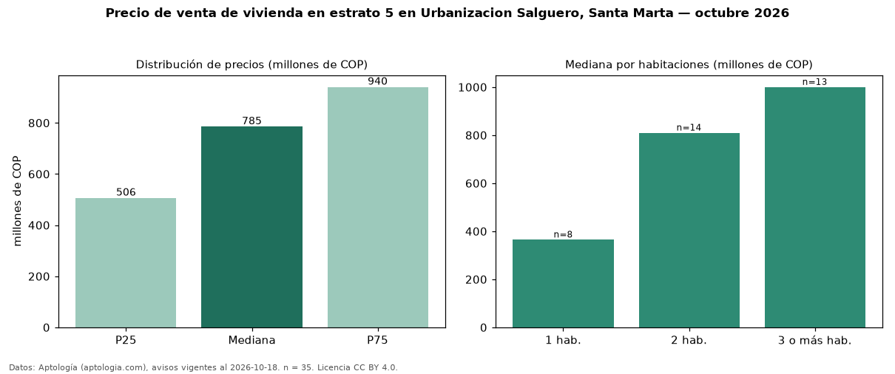

Precio de venta de vivienda en estrato 5 en Urbanizacion Salguero, Santa Marta — octubre 2026
En Urbanizacion Salguero, Santa Marta, la mediana de precio de venta de vivienda en estrato 5 es COP 785 millones, según 35 avisos vigentes. Por metro cuadrado, la mediana es COP 9,41 millones/m² (n = 35 avisos con área). Incluye todos los tipos de vivienda de estrato 5 del barrio; la mediana de apartamentos del barrio, sin filtrar por estrato, es COP 750 millones. El área mediana anunciada es 95 m². El segmento con más oferta es el de 2 habitaciones (14 avisos, mediana COP 810 millones); pasar de 1 habitación a 3 o más habitaciones cambia la mediana +174 %. La administración mediana declarada es COP 630.000 al mes (n = 33). La mitad central de los avisos va de COP 506 millones a COP 940 millones (razón 1,9), una dispersión moderada. Datos: Aptología (aptologia.com), CC BY 4.0 — https://www.aptologia.com/venta/santa-marta/urbanizacion-salguero. Archivos: PDF, CSV con las cifras y gráfica PNG.

| Avisos únicos | 35 |
|---|---|
| Percentil 25 | COP 506.035.300 |
| Mediana | COP 785.000.000 |
| Percentil 75 | COP 940.000.000 |
| Mediana por m² | COP 9.405.940 |
Fuente: avisos vigentes de portales inmobiliarios recopilados por Aptología, deduplicados (mínimo 30 avisos únicos por celda). Precios pedidos, no cerrados. Fecha: 2026-10-18.